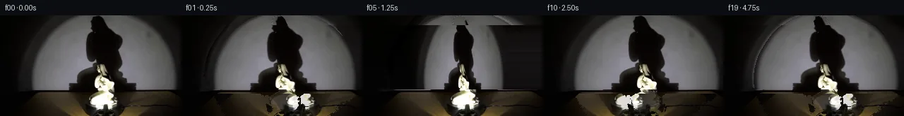
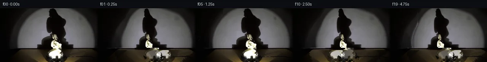
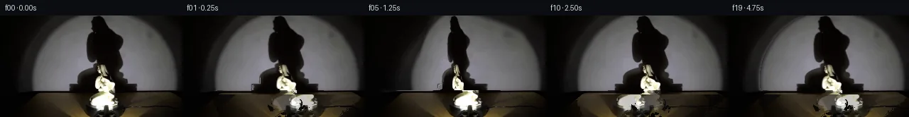
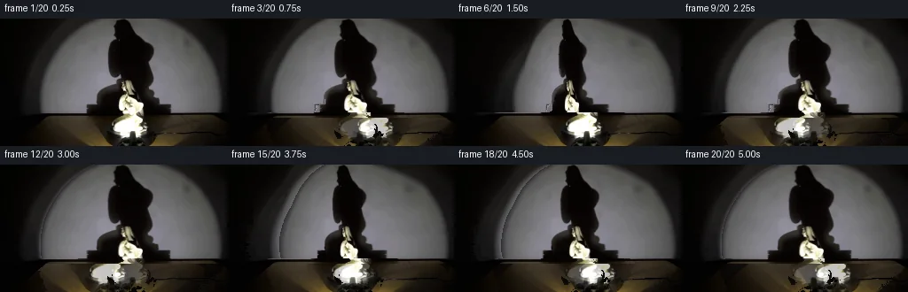
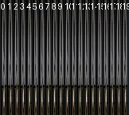

V0 · 初版
2026-11-05T19:22:50.703951+00:00 · RGB f773e8c7bb81
![]()
Observable Generation Trace
把最终像素视频、Harness 冻结的每轮候选、真实工具事件和 Agent 自述放在同一页。可观测证据与模型自述分开标记，避免把“模型说它检查过”误当成真实工具调用。
![首帧]()
Static locked-off single-shot with fixed frame throughout filmed with constant framerate in real-time. The scene shows a realistic scientific demonstration. The scene only contains the described setup and actions. The small porcelain statue sits on the black, clockwise-rotating platform, and the spotlight points toward the porcelain statue. The small porcelain statue rotates clockwise on the black platform while the spotlight casts a large shadow on the wall behind it.
首帧显示在左侧播放器初始画面。Track 权限、隔离和 tensor 一致性来自 run manifest，而不是 METHOD.md。
默认勾选初版和最终版；可选其他版本一起同步播放。仅检查图更新的连续重复快照已合并，回退旧视频仍保留为一次修订。
Observable events
来源：events.jsonl + run manifest
此 Track 禁止读取输出图片。逐轮预览由外部 Harness 自动冻结，只用于事后审计，生成 Agent 当时看不到这些页面。
Frozen candidates
每张图来自该 round 的真实 00 / 01 / 05 / 10 / 19 帧

pixels 4aec1a995cb751be · code 18f21e22f1d4ba68
--- previous/generate.py
+++ current/generate.py
@@ -0,0 +1,396 @@
+#!/usr/bin/env python3
+"""Generate 20 frames for PixelWorld-Text case: rotating porcelain statue.
+
+Scene: Porcelain statue on clockwise-rotating black platform,
+spotlight from right casts shadow on wall behind.
+20 frames at 4 fps, 5 seconds, 256×144 RGB.
+
+Method: Column-displacement warping of the statue region to simulate
+3D turntable rotation, plus shadow displacement and platform reflection
+cycling. All operations are pure numpy pixel transforms.
+"""
+
+import numpy as np
+from PIL import Image, ImageDraw
+from pathlib import Path
+from scipy.ndimage import binary_dilation, binary_fill_holes
+
+# ── Configuration ──────────────────────────────────────────────────────
+WORKSPACE = Path(__file__).parent
+FRAME_W, FRAME_H = 256, 144
+N_FRAMES = 20
+FPS = 4
+TOTAL_SECONDS = N_FRAMES / FPS # 5.0
+
+# Scene region boundaries (empirically determined from first frame)
+WALL_TOP, WALL_BOTTOM = 0, 106 # Wall+statue region
+BAND_TOP, BAND_BOTTOM = 106, 112 # Platform edge dark band
+PLAT_TOP, PLAT_BOTTOM = 112, 144 # Platform surface
+
+# Statue region
+STATUE_MIN_Y, STATUE_MAX_Y = 14, 106
+STATUE_CENTER_X = 140 # approximate horizontal center of statue
+
+
+# ── Helpers ───────────────────────────────────────────────────────────
+
+def load_first_frame():
+ """Load first_frame.png as uint8 RGB numpy array."""
+ img = Image.open(WORKSPACE / "first_frame.png")
+ arr = np.array(img).astype(np.uint8)
+ assert arr.shape == (FRAME_H, FRAME_W, 3), f"Unexpected shape: {arr.shape}"
+ return arr.copy()
+
+
+def rotation_params(frame_idx):
+ """Return (angle_rad, width_scale, shadow_shift_px, plat_shift_px) for frame."""
+ angle = 2.0 * np.pi * frame_idx / N_FRAMES # 0 to ~2π clockwise
+ # Width scale: 1.0 at front/back (0°, 180°), ~0.55 at profiles (90°, 270°)
+ width_scale = 0.55 + 0.45 * abs(np.cos(angle))
+ # Shadow shifts left when statue faces right (angle 0-π), right when facing left
+ shadow_shift = np.sin(angle) * 18.0
+ # Platform rotation: reflections cycle
+ plat_shift = np.sin(angle + np.pi * 0.5) * 24.0
+ return angle, width_scale, shadow_shift, plat_shift
+
+
+def build_statue_mask(frame0):
+ """Build a clean binary mask of the statue region in the wall area."""
+ wall_area = frame0[STATUE_MIN_Y:WALL_BOTTOM, :, :]
+ h_region, w_region = wall_area.shape[:2]
+
+ # Statue pixels: brighter than wall background
+ # Use a threshold and morphological operations
+ bright = (wall_area[:, :, 0] > 85) & (wall_area[:, :, 1] > 85) & (wall_area[:, :, 2] > 75)
+
+ # Also include darker statue body pixels (brown/gray structure)
+ mid_bright = ((wall_area[:, :, 0] > 55) & (wall_area[:, :, 1] > 55) &
+ (wall_area[:, :, 2] > 45) & (wall_area[:, :, 2] < 90))
+
+ # Detect the dark central silhouette (darker than surrounding bright area)
+ # These are parts of the statue that aren't as brightly lit
+ dark_body = ((wall_area[:, :, 0] < 25) & (wall_area[:, :, 1] < 25) &
+ (wall_area[:, :, 2] < 20) &
+ (wall_area[:, :, 0] > 3))
+
+ # Combine and dilate
+ mask = bright | mid_bright | dark_body
+ mask = binary_dilation(mask, iterations=2)
+ mask = binary_fill_holes(mask)
+ mask = binary_dilation(mask, iterations=1)
+
+ return mask
+
+
+def build_wall_background(frame0, statue_mask):
+ """Build a clean wall background by inpainting the statue region."""
+ h_region, w_region = statue_mask.shape
… diff truncated; 309 more lines …
pixels 77b849f72eb63707 · code 28b98de266f3346b
--- previous/generate.py
+++ current/generate.py
@@ -5,9 +5,9 @@
spotlight from right casts shadow on wall behind.
20 frames at 4 fps, 5 seconds, 256×144 RGB.
-Method: Column-displacement warping of the statue region to simulate
-3D turntable rotation, plus shadow displacement and platform reflection
-cycling. All operations are pure numpy pixel transforms.
+Method: Column-based displacement field warping of the upper scene
+(statue + shadow + spotlight on wall), plus platform surface rotation
+via horizontal pixel cycling. All pixel operations are pure numpy/scipy.
"""
import numpy as np
@@ -20,22 +20,35 @@
FRAME_W, FRAME_H = 256, 144
N_FRAMES = 20
FPS = 4
-TOTAL_SECONDS = N_FRAMES / FPS # 5.0
-
-# Scene region boundaries (empirically determined from first frame)
-WALL_TOP, WALL_BOTTOM = 0, 106 # Wall+statue region
-BAND_TOP, BAND_BOTTOM = 106, 112 # Platform edge dark band
-PLAT_TOP, PLAT_BOTTOM = 112, 144 # Platform surface
-
-# Statue region
-STATUE_MIN_Y, STATUE_MAX_Y = 14, 106
-STATUE_CENTER_X = 140 # approximate horizontal center of statue
-
-
-# ── Helpers ───────────────────────────────────────────────────────────
+
+# Scene boundaries (empirically determined)
+# Top area: wall + statue + shadow (rows 0-106)
+# Dark band: platform rim (rows 106-112)
+# Platform surface: rows 112-144
+WALL_BOTTOM = 106
+BAND_TOP, BAND_BOTTOM = 106, 112
+PLAT_TOP, PLAT_BOTTOM = 112, 144
+
+# Statue region in frame 00:
+# The statue body occupies roughly x=[55,162], with:
+# - Left portion: shadow on wall where statue blocks spotlight
+# - Center: the actual porcelain statue (bright)
+# - Right gap: dark shadow gap on wall
+# - Right side: spotlight-illuminated wall
+STATUE_LEFT = 55
+STATUE_RIGHT = 162
+STATUE_CENTER = 108 # center of rotation (middle of statue body)
+
+# Shadow region: dark area left of the statue
+SHADOW_LEFT = 10
+SHADOW_RIGHT = 75
+
+# Spotlight bright region on right wall
+SPOT_RIGHT_LEFT = 165
+SPOT_RIGHT_RIGHT = 230
+
def load_first_frame():
- """Load first_frame.png as uint8 RGB numpy array."""
img = Image.open(WORKSPACE / "first_frame.png")
arr = np.array(img).astype(np.uint8)
assert arr.shape == (FRAME_H, FRAME_W, 3), f"Unexpected shape: {arr.shape}"
@@ -43,312 +56,217 @@
def rotation_params(frame_idx):
- """Return (angle_rad, width_scale, shadow_shift_px, plat_shift_px) for frame."""
- angle = 2.0 * np.pi * frame_idx / N_FRAMES # 0 to ~2π clockwise
- # Width scale: 1.0 at front/back (0°, 180°), ~0.55 at profiles (90°, 270°)
- width_scale = 0.55 + 0.45 * abs(np.cos(angle))
- # Shadow shifts left when statue faces right (angle 0-π), right when facing left
- shadow_shift = np.sin(angle) * 18.0
- # Platform rotation: reflections cycle
- plat_shift = np.sin(angle + np.pi * 0.5) * 24.0
- return angle, width_scale, shadow_shift, plat_shift
-
-
-def build_statue_mask(frame0):
- """Build a clean binary mask of the statue region in the wall area."""
- wall_area = frame0[STATUE_MIN_Y:WALL_BOTTOM, :, :]
- h_region, w_region = wall_area.shape[:2]
-
- # Statue pixels: brighter than wall background
- # Use a threshold and morphological operations
- bright = (wall_area[:, :, 0] > 85) & (wall_area[:, :, 1] > 85) & (wall_area[:, :, 2] > 75)
-
- # Also include darker statue body pixels (brown/gray structure)
… diff truncated; 481 more lines …
pixels a9fcaf8940efabe9 · code 8886546d17f49d28
--- previous/generate.py
+++ current/generate.py
@@ -5,15 +5,16 @@
spotlight from right casts shadow on wall behind.
20 frames at 4 fps, 5 seconds, 256×144 RGB.
-Method: Column-based displacement field warping of the upper scene
-(statue + shadow + spotlight on wall), plus platform surface rotation
-via horizontal pixel cycling. All pixel operations are pure numpy/scipy.
+Method: Column-based displacement warping of the wall region to simulate
+3D turntable rotation, plus platform surface rotation via pixel cycling.
+All pixel operations are pure numpy/scipy with linear interpolation for
+sub-pixel shifts.
"""
import numpy as np
from PIL import Image, ImageDraw
from pathlib import Path
-from scipy.ndimage import binary_dilation, binary_fill_holes
+from scipy.ndimage import binary_dilation
# ── Configuration ──────────────────────────────────────────────────────
WORKSPACE = Path(__file__).parent
@@ -21,146 +22,149 @@
N_FRAMES = 20
FPS = 4
-# Scene boundaries (empirically determined)
+# Scene boundaries (empirically determined from first_frame.png)
# Top area: wall + statue + shadow (rows 0-106)
-# Dark band: platform rim (rows 106-112)
+# Dark band: platform rim edge (rows 106-112)
# Platform surface: rows 112-144
WALL_BOTTOM = 106
BAND_TOP, BAND_BOTTOM = 106, 112
PLAT_TOP, PLAT_BOTTOM = 112, 144
-# Statue region in frame 00:
-# The statue body occupies roughly x=[55,162], with:
-# - Left portion: shadow on wall where statue blocks spotlight
-# - Center: the actual porcelain statue (bright)
-# - Right gap: dark shadow gap on wall
-# - Right side: spotlight-illuminated wall
+# Statue region parameters (from analysis of frame 00)
+# The statue body sits in the center with spotlight from the right
+# Columns x=60 to x=200 roughly encompass the statue + immediate shadow
STATUE_LEFT = 55
-STATUE_RIGHT = 162
-STATUE_CENTER = 108 # center of rotation (middle of statue body)
-
-# Shadow region: dark area left of the statue
-SHADOW_LEFT = 10
-SHADOW_RIGHT = 75
-
-# Spotlight bright region on right wall
-SPOT_RIGHT_LEFT = 165
-SPOT_RIGHT_RIGHT = 230
+STATUE_RIGHT = 170
+STATUE_CENTER = 112 # center of rotation
+
+# Shadow region (dark left side of wall)
+SHADOW_LEFT_EDGE = 0
+SHADOW_RIGHT_EDGE = 80
def load_first_frame():
img = Image.open(WORKSPACE / "first_frame.png")
arr = np.array(img).astype(np.uint8)
- assert arr.shape == (FRAME_H, FRAME_W, 3), f"Unexpected shape: {arr.shape}"
+ assert arr.shape == (FRAME_H, FRAME_W, 3)
return arr.copy()
def rotation_params(frame_idx):
- """Return (angle_rad, statue_warp_strength, shadow_shift, plat_shift)."""
- angle = 2.0 * np.pi * frame_idx / N_FRAMES # clockwise rotation
- # Warp strength: 0 at front/back (0°, 180°), max at profiles (90°, 270°)
- warp_strength = np.sin(angle) # -1 to +1, controls direction and amount
- warp_magnitude = abs(np.cos(angle)) # 1→0→1→0: how much to compress
- shadow_shift = np.sin(angle) * 12.0 # shadow moves with rotation
- plat_shift = np.sin(angle + np.pi * 0.5) * 28.0 # platform reflection cycle
- return angle, warp_magnitude, warp_strength, shadow_shift, plat_shift
-
-
-def build_displacement_map(h, w, warp_magnitude, warp_strength):
- """Build per-column displacement map for rotation warping.
-
- The statue region (STATUE_LEFT to STATUE_RIGHT) gets squeezed toward
- STATUE_CENTER. The amount of squeeze depends on warp_magnitude.
- warp_strength controls which side is compressed more.
… diff truncated; 330 more lines …Final visual checks
Harness 保存的最终产物


Agent claims
以下文字由生成 Agent 撰写，不等同于工具证据
first_frame.png: 256×144 RGB, 8-bit per channelprompt.txt: "Static locked-off single-shot with fixed frame throughout filmed with constant framerate in real-time. The scene shows a realistic scientific demonstration. The scene only contains the described setup and actions. The small porcelain statue sits on the black, clockwise-rotating platform, and the spotlight points toward the porcelain statue. The small porcelain statue rotates clockwise on the black platform while the spotlight casts a large shadow on the wall behind it."The 256×144 image is divided into three main vertical regions:
Camera view: Fixed front-ish perspective
Lighting: Single spotlight from upper-right, casting light toward the statue
Statue: Porcelain (white/cream), sits on turntable platform center
Shadow: Cast leftward on the wall behind the statue
Platform: Black turntable at bottom, reflective surface
Duration: 5 seconds at 4 fps → 20 frames (00–19) Rotation: Clockwise, 360° total → 18° per frame
| Frame | Time (s) | Rotation Angle | Description |
|---|---|---|---|
| 00 | 0.00 | 0° (front) | Starting position — exact match to first_frame.png |
| 01 | 0.25 | 18° | Statue begins clockwise turn; shadow shifts slightly left; platform reflections shift right |
| 02 | 0.50 | 36° | Statue turning; subtle width compression begins |
| 03 | 0.75 | 54° | Statue approaching 3/4 view; shadow continues shifting |
| 04 | 1.00 | 72° | Near profile; statue narrows horizontally |
| 05 | 1.25 | 90° (right profile) | Statue at minimum width; maximum leftward shadow displacement |
| 06 | 1.50 | 108° | Statue widening; turning toward back |
| 07 | 1.75 | 126° | Shadow begins shifting rightward back toward center |
| 08 | 2.00 | 144° | Statue approaching 3/4 rear view |
| 09 | 2.25 | 162° | Near back view; shadow nearly centered |
| 10 | 2.50 | 180° (back) | Back view; statue at full width; shadow centered |
| 11 | 2.75 | 198° | Turning from back; shadow shifts right |
| 12 | 3.00 | 216° | Approaching left profile; statue narrows |
| 13 | 3.25 | 234° | Near left profile |
| 14 | 3.50 | 252° | Left profile; minimum width; maximum rightward shadow |
| 15 | 3.75 | 270° (left profile) | Statue at minimum width; shadow fully right |
| 16 | 4.00 | 288° | Turning back toward front; statue widens |
| 17 | 4.25 | 306° | Shadow returning to left |
| 18 | 4.50 | 324° | Approaching front view |
| 19 | 4.75 | 342° | Nearly full rotation; close to original position |
Statue rotation: Horizontal shear + scale transform on statue mask region, simulating 3D turntable rotation. The statue width modulates with cos(angle), with max width at 0°/180° (front/back) and min width at 90°/270° (profiles).
Shadow animation: The dark shadow region on the wall (left side of statue) shifts horizontally with sin(angle) to simulate shadow displacement as the spotlight-illuminated statue rotates.
Platform rotation: The reflective surface (rows 112–143) pixels shift horizontally row-by-row with sinusoidal modulation, simulating the rotating turntable surface.
Specular highlights: The bright spots on the platform rim shift horizontally to match platform rotation.
The input first_frame.png (256×144 RGB) shows a porcelain statue on a black rotating platform, illuminated by a spotlight from the right side. The scene is divided vertically into three regions:
Wall + Statue + Shadow (rows 0–106): The upper portion containing the wall background, the porcelain statue (center, bright white/gray), the spotlight cone (right side, bright), and the shadow cast on the wall (left side, dark).
Platform Rim (rows 106–112): A dark band representing the edge of the rotating turntable, with narrow specular highlights from the spotlight.
Platform Surface (rows 112–144): The reflective black turntable surface with bright specular reflections.
The statue occupies approximately columns 55–170. The spotlight illuminates the wall on the right (columns 170–230). The shadow falls on the left wall (columns 0–80).
The core animation technique is column-based displacement warping applied to the wall region (rows 0–106). This simulates the 3D rotation of the statue on a turntable as seen from a fixed camera.
For each frame at angle θ (clockwise rotation from 0° to 342°):
Compression factor: compress = 1.0 − |cos(θ)|. This is 0 at front/back views (0°, 180°) and 1.0 at profile views (90°, 270°). The statue appears at full width when facing the camera and narrowest in profile.
Displacement map: Each column x in the statue region is displaced toward the statue center (x=112) by an amount proportional to its distance from center and the compression factor:
Linear interpolation: Columns are warped using numpy.interp for sub-pixel accuracy, producing smooth transitions between frames.
The dark shadow on the left wall is detected via pixel intensity thresholds (dark but not pitch-black pixels). This shadow region is shifted horizontally using numpy.roll with the shift amount modulated by sin(θ):
A soft penumbra zone (medium-dark pixels) is shifted at ~45% the rate of the hard shadow, creating a natural shadow transition.
The platform surface reflections (rows 112–144) are cycled horizontally using numpy.roll modulated by cos(θ):
numpy.interp), pixel rollingscipy.ndimage.binary_dilation (used in previous versions for mask operations)All 20 PNG frames were verified against the pixels.npz uint32 0xRRGGBB tensor via bit-level reconstruction. Frame 00 exactly matches first_frame.png (assertion-checked), and all PNGs are bit-identical to their NPZ tensor representations.
| Frame | Time | Angle | Compress | Shadow Shift | Platform Shift | Description |
|---|---|---|---|---|---|---|
| 00 | 0.00s | 0° | 0.00 | +0.0 | +26.0 | Front view (original) |
| 01 | 0.25s | 18° | 0.05 | +3.1 | +24.7 | Beginning right turn |
| 02 | 0.50s | 36° | 0.19 | +5.9 | +21.0 | Turning right |
| 03 | 0.75s | 54° | 0.41 | +8.1 | +15.3 | Approaching right profile |
| 04 | 1.00s | 72° | 0.69 | +9.5 | +8.0 | Near right profile |
| 05 | 1.25s | 90° | 1.00 | +10.0 | +0.0 | Right profile (narrowest) |
| 06 | 1.50s | 108° | 0.69 | +9.5 | −8.0 | Turning past right profile |
| 07 | 1.75s | 126° | 0.41 | +8.1 | −15.3 | Turning toward back |
| 08 | 2.00s | 144° | 0.19 | +5.9 | −21.0 | Near back view |
| 09 | 2.25s | 162° | 0.05 | +3.1 | −24.7 | Approaching back |
| 10 | 2.50s | 180° | 0.00 | +0.0 | −26.0 | Back view (full width) |
| 11 | 2.75s | 198° | 0.05 | −3.1 | −24.7 | Beginning left turn |
| 12 | 3.00s | 216° | 0.19 | −5.9 | −21.0 | Turning left |
| 13 | 3.25s | 234° | 0.41 | −8.1 | −15.3 | Approaching left profile |
| 14 | 3.50s | 252° | 0.69 | −9.5 | −8.0 | Near left profile |
| 15 | 3.75s | 270° | 1.00 | −10.0 | +0.0 | Left profile (narrowest) |
| 16 | 4.00s | 288° | 0.69 | −9.5 | +8.0 | Turning past left profile |
| 17 | 4.25s | 306° | 0.41 | −8.1 | +15.3 | Turning toward front |
| 18 | 4.50s | 324° | 0.19 | −5.9 | +21.0 | Near front view |
| 19 | 4.75s | 342° | 0.05 | −3.1 | +24.7 | Approaching completion |